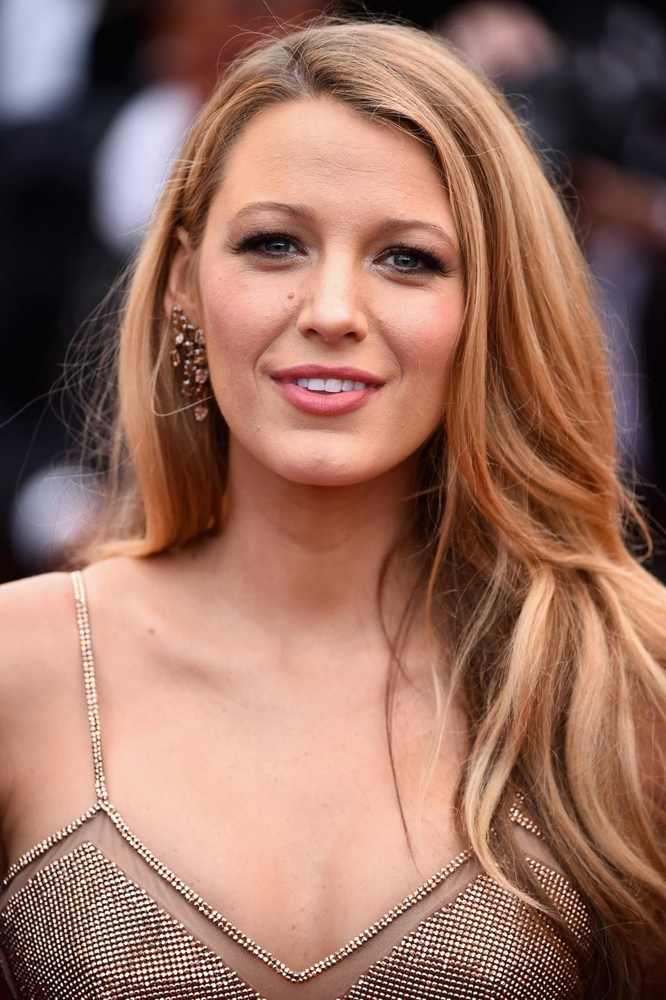

Blake Ellender Lively is an American actress. Born in Los Angeles, L
ively is the daughter of actor Ernie Lively, and made her professional debut in his directorial project Sandma
n (1998).
She starred as Bridget Vreeland in The Sisterhood of the Traveling Pants (2005) alongside its sequel The Sisterhood of the Traveling Pants to commercial success.
She appeared opposite Justin Long in comedy
Accepted (2006), and gained recognition for portraying Serena van der Woodsen in the CW drama television series
Gossip Girl.
